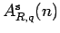
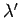
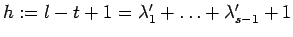
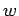
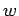
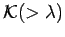

We are now able to give the proof of the following weak form of the straightening algorithm.
PROOF: We divide into the following two cases
Case 1:
By assumption there are two consecutive indices and in
 such that
such that
 and
and
 . If
, we have
by Corollary 9.2, implying our assertion.
In the case
. If
, we have
by Corollary 9.2, implying our assertion.
In the case
 we apply Corollary 9.12:
we apply Corollary 9.12:
The multi-indices
in the sum satisfy
and consequently
 . Finally, since
and
occurs before
. Finally, since
and
occurs before  in the
lexicographic order on
in the
lexicographic order on  we have
as well.
we have
as well.
Case 2:
In principle we follow the lines of the proof of [Ma, 2.5.7].
But since
 is not commutative we have to
work with a fixed basic tableau. The change of
basic tableaux in [Ma, 2.5.7] can be compensated for by
Lemma 9.8.
To start, let
be the
smallest index such that is larger than its right hand neighbour
in the  -tableau of
-tableau of  .
Assume that the entry lies in the -th column
and that lies in the -th column
,
where
. Clearly,
.
Let
.
Assume that the entry lies in the -th column
and that lies in the -th column
,
where
. Clearly,
.
Let  be the index of the row containing both entries. We picture this
by
be the index of the row containing both entries. We picture this
by
By assumption we have
. Now, we refine the dual partition
 of  to a
composition
, where
is the number of columns of the diagram of
to a
composition
, where
is the number of columns of the diagram of  . More
precisely, we split the
-th and -th column in front of and below the
. More
precisely, we split the
-th and -th column in front of and below the  -th row:
-th row:
Obviously, this  is the coarsest refinement of the partition
and the composition
defined above. Let us split the multi-index
is the coarsest refinement of the partition
and the composition
defined above. Let us split the multi-index  according to
according to  as follows:
as follows:
Here,  is the index of the first entry of the -th column and (resp. ) are the lengths of both columns in question. We have
In order to apply Laplace Duality 9.7 to the pair
of compositions
we have to choose coset representatives of
in
and
carefully. From the theory of
parabolic subgroups of reflection groups it is known that each right coset
of
in
contains a unique element of minimal length called the distinguished
right coset representative, in fact one looks for coset representatives of
in
. We choose these for our set  . The property
for and
follows from
that theory as well. Similarily, one finds a set of distinguished
left coset representatives of
in
satisfying
for
and .
. The property
for and
follows from
that theory as well. Similarily, one finds a set of distinguished
left coset representatives of
in
satisfying
for
and .
We will not apply Laplace Duality to the original index pair
 , for we must handle the transition from the
order
, for we must handle the transition from the
order  to
to  . Instead of
. Instead of  we rather consider
where
is chosen in such a way
that
and for
and
(the embedding of
is
understood according to the composition
we rather consider
where
is chosen in such a way
that
and for
and
(the embedding of
is
understood according to the composition  ). This  exists uniquely
since
contains exactly
elements by the assumption
on
). This  exists uniquely
since
contains exactly
elements by the assumption
on  .
Now, by Laplace-Duality we obtain
.
Now, by Laplace-Duality we obtain
With help of Lemma 9.8 the right hand side of this equation
can be written as a linear combination of
bideterminants
. Thus the right hand side
is seen to lie in
 as soon we have shown that
. But that follows since the longest column
being removed from the diagram of  to obtain the diagram of
to obtain the diagram of  has length
, whereas a column of length
has to be added to the diagram of
has length
, whereas a column of length
has to be added to the diagram of  . On the left hand side of
(12) we may apply Corollary 9.14 by construction
of the multi-index :
. On the left hand side of
(12) we may apply Corollary 9.14 by construction
of the multi-index :
the sum running over all satisfying
.
Now, for all we have
since
lies in
. Furthermore, there is a unique
coset representative satisfying
and this is the only one for
which the corresponding
 lies in
. Therefore, in the case
there is an such that
and
.
Choose such an for each . In doing so, we are assigning a
transposition
to each that is contained
in
. In the case of we set
.
Applying Corollary 9.12 to
lies in
. Therefore, in the case
there is an such that
and
.
Choose such an for each . In doing so, we are assigning a
transposition
to each that is contained
in
. In the case of we set
.
Applying Corollary 9.12 to  one calculates
one calculates
where the sum runs over all satisfying , again. For these we set
whereas in the case we write

Observe that
occurs in the latter
definition for .
We assert that for , the multi-index
occurs before  in the
lexicographic order with respect to
in the
lexicographic order with respect to  .
For by construction of
.
For by construction of  and we have
and we have
and consequently
 . But this implies
,
since for . Thus we obtain
. But this implies
,
since for . Thus we obtain
Since the coefficient
is invertible,
the asserted congruence relation holds as well.

It should be remarked that the proof works with any other
order on
 instead of
instead of  , as well. The proof of the
strong part of the algorithm (Proposition 8.3)
can be given right now in the (initial)
case
, as well. The proof of the
strong part of the algorithm (Proposition 8.3)
can be given right now in the (initial)
case  and we are going to do this not only because it is
very instructive, but also because we will need a basis of
in order to proceed to the general case.
and we are going to do this not only because it is
very instructive, but also because we will need a basis of
in order to proceed to the general case.
If  there are exactly two partitions in
for
there are exactly two partitions in
for  ,
namely and , where
and
are the fundamental weights (see section 3).
In the first case we have
, that is, the weak and the strong
form of the straightening algorithm coincide. Turning to there is exactly
one element in
,
namely
,
namely and , where
and
are the fundamental weights (see section 3).
In the first case we have
, that is, the weak and the strong
form of the straightening algorithm coincide. Turning to there is exactly
one element in
,
namely
 .
By (4.3) we obtain in
.
By (4.3) we obtain in
yielding Proposition 8.3 in the case  since
for all
since
for all  .
.